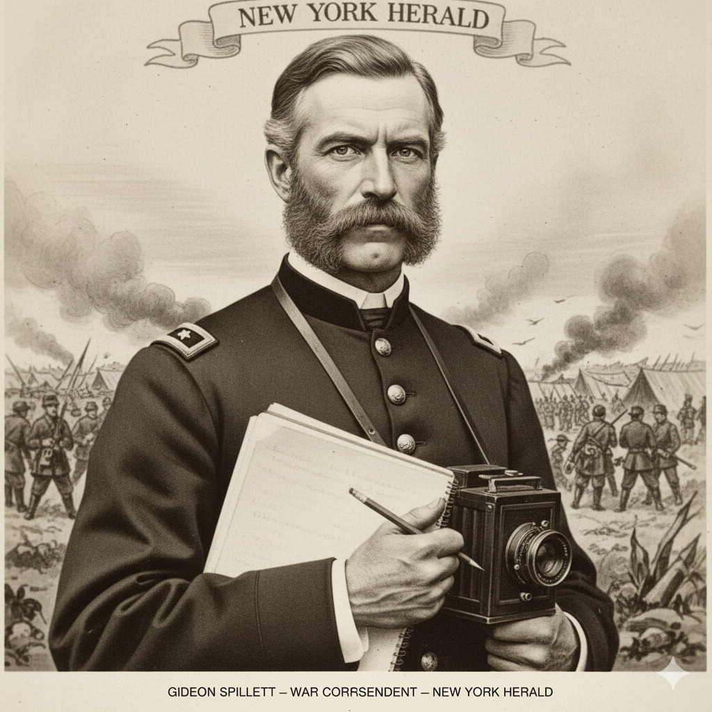
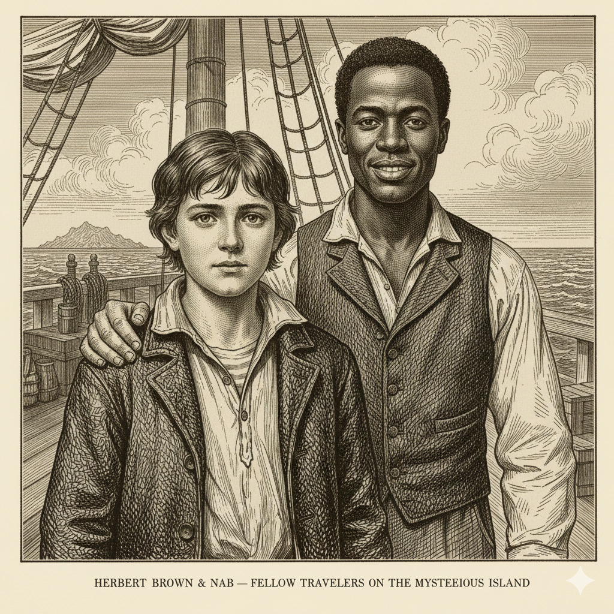

Сводная таблица участников
Пятеро смельчаков и одна собака, которые бросили вызов дикой природе.
| Имя | Профессия / Роль | Ключевой навык |
|---|---|---|
| Сайрус Смит | Инженер и ученый | Создание химии, металлургии и механизмов |
| Гедеон Спилет | Журналист | Охота, медицина и ведение хроники |
| Б. Пенкроф | Моряк | Ткачество, фермерство, судостроение |
| Герберт Браун | Юннат (натуралист) | Знание ботаники и зоологии острова |
| Наб | Кузнец / Повар | Невероятная сила и преданность |
| Топ | Верный пес | Охрана и поиск скрытых угроз |
Подробные досье
1. Сайрус Смит

Возраст: около 45 лет.
Профессия: Инженер, офицер армии Севера.
Душа и мозг колонии. Худощавый, коротко стриженный, с горящими глазами. Он — ходячая энциклопедия. Именно Смит смог без инструментов определить координаты острова, изготовить взрывчатку, сварить мыло и даже спроектировать подъемник.
«Пока у нас есть инженер, нам нечего бояться» — говорили его спутники.
2. Гедеон Спилет
Возраст: около 40 лет.
Профессия: Военный корреспондент газеты «Нью-Йорк Геральд».
Высокий, энергичный человек. Никогда не расстается с записной книжкой. На острове он стал главным добытчиком пищи — прекрасным охотником. Именно он вел дневник, благодаря которому мы знаем историю колонии. Он мог написать статью даже под пушечным обстрелом, не теряя хладнокровия.
3. Бонадвентур Пенкроф

Возраст: 35-40 лет.
Профессия: Моряк.
Добродушный великан, суеверный, но невероятно трудолюбивый. Он стал «фермером» острова: выращивал пшеницу из единственного зернышка, строил корабль и готовил еду. Он очень любил табак и страдал без него, пока на острове не нашли растение, похожее на табак.
4. Наб и Герберт
- Наб (Навуходоносор): Бывший раб, беззаветно преданный Сайрусу Смиту. Обладает огромной физической силой и навыками кузнеца.
- Герберт Браун: 15-летний юноша, сын капитана корабля, на котором плавал Пенкроф. Увлекается ботаникой и зоологией.
Вместе они составляют идеальную команду, где каждый отвечает за свою задачу.